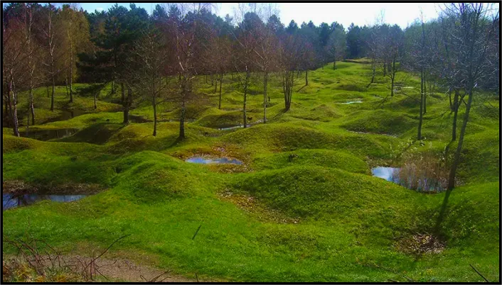
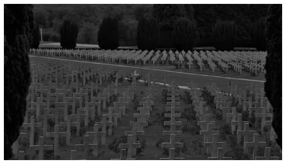

Verdun
Verdun ? Ce nom ne doit pas vous être inconnu.
Le déclenchement
Le déclenchement de cette longue et meurtrière guerre ?
C’est l’assassinat de Franz Ferdinand, un homme politique autrichien.
Il est assassiné le 28 juin 1914 à Sarajevo en Autriche-Hongrie.
Cette guerre a opposé deux camps.
La triple entente composée de la France, du Royaume-Uni et de l'Empire russe.
La triple alliance composée de l'Empire allemand, l’Empire austro-hongrois et le Royaume d'Italie.
Le début d’une époque.
Le 28 juin 1914 c’est le début de la Première Guerre mondiale.
Durant ces longues années de guerre, il y eut plusieurs batailles.
Mais l’une des plus connues est la Bataille de Verdun.
Elle est appelé mère des batailles car c’était la plus longue.
Elle commence en 21 février 1916 à Verdun.
Elle fera plus de 163 000 morts et 216 000 blessés du coté français.
Puis 143 000 morts et 196 000 blessés du coté allemand.
C’est plus de 53 millions d’obus tirés soit un obus toutes les 2 secondes.
9 villages rayés de la carte et 6 n’ont pas été reconstruits.
C’est le 18 décembre 1916, que la France gagne la bataille de Verdun.
Le 11 novembre 1918 c’est la fin de la guerre mondiale.
Ancien champs de bataille
dans une forêt de Verdun
Une ville reconstruite.
Verdun une ville qui est beaucoup portée sur son passé.
En effet quand on parle de Verdun on ne pense qu’à cette bataille.
Mais la ville et ses habitants ne sont pas restés à rien faire après cette bataille.
Une fois la guerre terminée Verdun s’est reconstruite, certains villages n’ont pas été réparés.
C’est à 80 km de Metz que se situe cette petite ville.
Verdun est une commune de France située au Nord Est.
Après la fin de la guerre Verdun ne s’est pas totalement reconstruite.
Des musées et des mémoriaux ont été contruit sur certaines places.
C’est le cas de l'ossuaire de Douaumont.
Une place qui rassemble 16 142 tombes de soldats français de toutes religions.
Ossuaire de Douaumont, Janvier 2016
